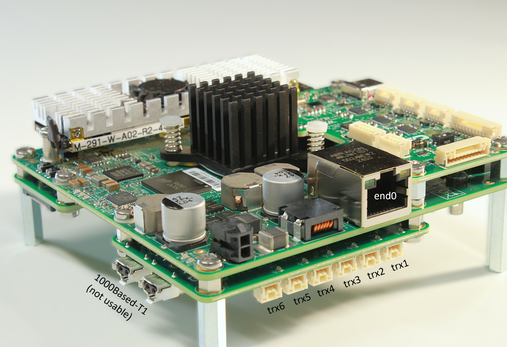
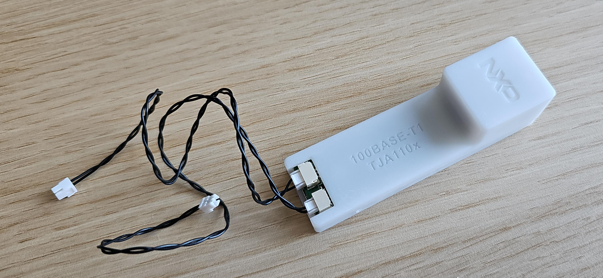

MR-NavQ95 Ethernet Guide¶
Introduction¶
This application note describes the Ethernet networking subsystem of the MR-NavQ95 vehicle computer (based on the NXP i.MX 95 applications processor) and shows how to bring up and use its wired network interfaces on the Linux (Cortex-A55) side, including the T1 Switch (SJA1110) expansion board.
It covers the available Ethernet ports and their mapping to Linux interfaces, the T1 Switch expansion board and T1 adapter, detecting the SJA1110 switch, VLAN configuration and interface partitioning between the Cortex-A55 (Linux) and Cortex-M7 (PX4/NuttX) domains, and the known issues and limitations.
It is intended for engineers integrating MR-NavQ95 into a networked robotics application, whether the board is connected over standard Ethernet or over the automotive 100BASE-T1 / 1000BASE-T1 ports provided by the SJA1110 switch.
1. Ethernet subsystem architecture¶
The MR-NavQ95 board exposes the following Ethernet ports:
Standard Ethernet 1 Gbps — RJ45 connector.
XGMII-based networking expansion boards:
MR-NAVQ95E-T1S: T1 Switch utilizing the NXP SJA1110 — 6× 100BASE-T1 + 2× 1000BASE-T1 (1000BASE-T1 ports not currently usable).
1.1 Ports mapping to Linux interfaces¶
1 Gbps RJ45 port mapped to
end0.6× 100BASE-T1 ports mapped to
trx1..trx6.


1.2 T1 adapter¶
The T1 adapter is used to connect a 100BASE-T1 port to standard RJ45 equipment:
T1 connector (JST-2 wire) — to be connected to
trx1..trx6.Power connector (JST-3 wire) — not used.
Micro-USB connector — used for power.


The T1 adapter is connected to a T1 port and exposes an RJ45 connector to plug into other devices.
2. Using Ethernet via the SJA1110 interfaces¶
2.1 Detecting the SJA1110 switch¶
When the T1S (SJA1110 switch) expansion card is installed, the following output can be observed during Linux boot:
root@imx95-navq:/home/user# dmesg | grep -i sja
[ 14.944635] sja1105 spi0.1: Probed switch chip: SJA1110A
[ 15.467874] sja1105 spi0.1: configuring for fixed/2500base-x link mode
[ 15.521648] sja1105 spi0.1: Link is Up - 2.5Gbps/Full - flow control off
[ 15.534243] sja1105 spi0.1 trx1 (uninitialized): PHY [spi0.1-base-t1:01] driver [NXP C45 TJA1103] (irq=POLL)
[ 15.546102] sja1105 spi0.1 trx2 (uninitialized): PHY [spi0.1-base-t1:02] driver [NXP C45 TJA1103] (irq=POLL)
[ 15.559029] sja1105 spi0.1 trx3 (uninitialized): PHY [spi0.1-base-t1:03] driver [NXP C45 TJA1103] (irq=POLL)
[ 15.573131] sja1105 spi0.1 trx4 (uninitialized): PHY [spi0.1-base-t1:04] driver [NXP C45 TJA1103] (irq=POLL)
[ 15.586113] sja1105 spi0.1 trx5 (uninitialized): PHY [spi0.1-base-t1:05] driver [NXP C45 TJA1103] (irq=POLL)
[ 15.601885] sja1105 spi0.1 trx6 (uninitialized): PHY [spi0.1-base-t1:06] driver [NXP C45 TJA1103] (irq=POLL)
Using a T1 adapter is required for connecting to other equipment, in the absence of a T1-compatible device.
2.2 Preventing NetworkManager from managing the T1 interfaces¶
NetworkManager should be disabled and/or the interfaces associated with the
SJA1110 should not be managed by NetworkManager, which could cause IP settings
to be overridden. This is achieved by creating
/etc/NetworkManager/conf.d/99-trx-unmanaged.conf with the following content:
[device-trx-unmanaged]
match-device=interface-name:trx1;interface-name:trx2;interface-name:trx3;interface-name:trx4;interface-name:trx5;interface-name:trx6
managed=0
Then restart NetworkManager:
sudo systemctl restart NetworkManager
2.3 Usage scenarios¶
The interfaces of the SJA1110 can be used in two different scenarios:
No VLAN configuration (default):
Each
trx1..trx6can be used as a standalone interface.IP addresses can be assigned individually.
Basic tests with ping traffic can be performed.
VLAN configuration: each interface can belong to a different VLAN.
3. VLAN membership and A55/M7 interface partitioning¶
This section demonstrates VLAN membership and interface partitioning between the Cortex-A55 (Linux) and the Cortex-M7 (PX4/NuttX) domains.
3.1 Create VLANs and assign ports¶
The example bash script below (must be executed as root) creates VLANs 10
and 20, assigning trx1, trx2, trx3 to VLAN 10 and trx4, trx5, trx6 to
VLAN 20:
#!/bin/bash
# 1. Create bridge with VLAN filtering
ip link add name br0 type bridge
ip link set br0 type bridge vlan_filtering 1
ip link set br0 up
# 2. Attach all ports to the bridge
for i in trx1 trx2 trx3 trx4 trx5 trx6; do
ip link set $i master br0
ip link set $i up
done
# 3. Remove default VLAN 1 from all ports and br0
bridge vlan del dev br0 vid 1 self
for i in trx1 trx2 trx3 trx4 trx5 trx6; do
bridge vlan del dev $i vid 1
done
# 4. Assign trx1, trx2, trx3 to VLAN 10 (untagged access ports)
for i in trx1 trx2 trx3; do
bridge vlan add dev $i vid 10 pvid untagged
done
# 5. Assign trx4, trx5, trx6 to VLAN 20 (untagged access ports)
for i in trx4 trx5 trx6; do
bridge vlan add dev $i vid 20 pvid untagged
done
# 6. Add both VLANs to the bridge (CPU port)
bridge vlan add dev br0 vid 10 self
bridge vlan add dev br0 vid 20 self
Verify the result:
root@imx95-navq:/home/user# bridge vlan show
port vlan-id
trx1 10 PVID Egress Untagged
trx2 10 PVID Egress Untagged
trx3 10 PVID Egress Untagged
trx4 20 PVID Egress Untagged
trx5 20 PVID Egress Untagged
trx6 20 PVID Egress Untagged
br0 10
20
Devices connected to ports in VLAN 10 can communicate with each other, and devices connected to ports in VLAN 20 can communicate with each other. Traffic between VLAN 10 and VLAN 20 is isolated.
3.2 Assign IP addresses and the M7 virtual interface¶
To perform basic traffic tests involving Linux, bridge interfaces for VLANs 10
and 20 must be created and IP addresses assigned. The script below must be
executed as root:
#!/bin/bash
# Step 1 — Create VLAN interfaces on the bridge
ip link add link br0 name br0.10 type vlan id 10
ip link add link br0 name br0.20 type vlan id 20
ip link set br0.10 up
ip link set br0.20 up
# Step 2 — Add IP addresses to interfaces
ip addr add 192.168.10.1/24 dev br0.10
ip addr add 192.168.20.1/24 dev br0.20
# Step 3 — Assign M7 virtual ethernet to a VLAN (20)
ip link set dev end1 vf 0 trust on
ip link set dev end1 vf 1 trust on
ip link set end1 vf 1 vlan 20
3.3 Basic connectivity test¶
To test basic connectivity/traffic, connect devices to ports assigned to VLAN 10 and VLAN 20, assign IP addresses, and run a ping test.
Assuming the following connected devices:
Device connected to
trx1(VLAN 10) with IP address 192.168.10.100.Device connected to
trx6(VLAN 20) with IP address 192.168.20.100.
From the Linux host, devices from both VLANs are accessible as long as the
corresponding br0.X interfaces are UP and the configured IP settings are
correct.
3.4 Using Ethernet from the M7 (PX4/NuttX)¶
Using Ethernet from the M7 running PX4/NuttX requires accessing the NSH console
of PX4 and setting an IP address for the eth0 interface. The default IP
address set by NuttX is 10.0.0.2/24.
root@imx95-navq:/home/user# picocom /dev/ttynsh
nsh>
nsh> ifconfig eth0 192.168.20.200 netmask 255.255.255.0
nsh> ifconfig
...
eth0 Link encap:Ethernet HWaddr 02:04:9f:00:11:00 at RUNNING mtu 576
inet addr:192.168.20.200 DRaddr:192.168.20.1 Mask:255.255.255.0
nsh>
nsh> ping 192.168.20.100
PING 192.168.20.100 56 bytes of data
56 bytes from 192.168.20.100: icmp_seq=0 time=2.0 ms
56 bytes from 192.168.20.100: icmp_seq=1 time=1.0 ms
...
56 bytes from 192.168.20.100: icmp_seq=9 time=2.0 ms
10 packets transmitted, 10 received, 0% packet loss, time 10010 ms
rtt min/avg/max/mdev = 1.000/1.300/2.000/0.458 ms
nsh>
Modifying the VLAN membership for the M7 and assigning it to VLAN 10, followed by
new IP settings in NSH, allows pinging the device connected to the trx1
interface with IP 192.168.10.100. Modify step 3 of the previous script as
follows:
# Step 3 — Assign M7 virtual ethernet to a VLAN (10)
ip link set dev end1 vf 0 trust on
ip link set dev end1 vf 1 trust on
ip link set end1 vf 1 vlan 10
4. Known issues and limitations¶
Traffic from M7 (PX4) to A55 (Linux) is not currently possible; however, both the M7 and the A55 can communicate (ping) an external device connected over T1 Ethernet.
Low throughput when using a Windows PC connected to the MR-NavQ95 board. Disable the Energy Efficient Ethernet (EEE) feature for the NIC (Windows PowerShell command):
Set-NetAdapterAdvancedProperty -Name "Ethernet" -DisplayName "Energy Efficient Ethernet" -DisplayValue "Off"
The SJA1110
end1interface is impacted by the DSA (Distributed Switch Architecture) conduit, and TCP checksum offload is not applied across theend1 -> SJA switch -> trx*forwarding path. As a result, frames leave with an unfinished checksum, arrive corrupted at the external device, and eventually get dropped. Force software checksumming:sudo ethtool -K end1 tx off tso off gso off gro off
References¶
NXP SJA1110 automotive Ethernet switch — https://www.nxp.com/products/SJA1110